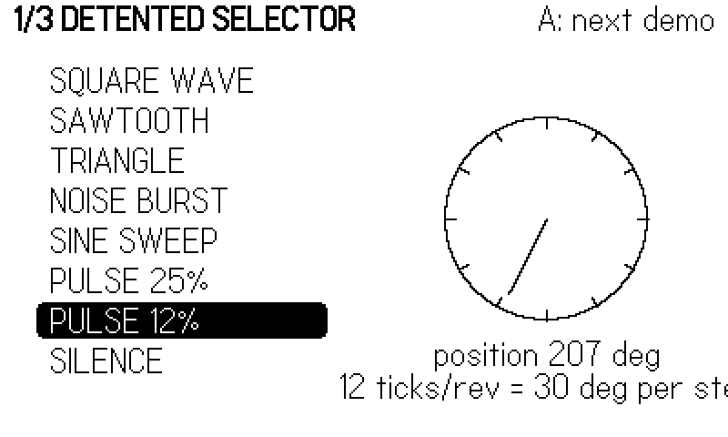
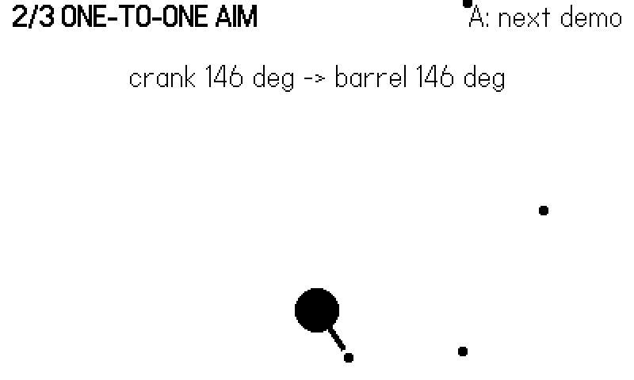
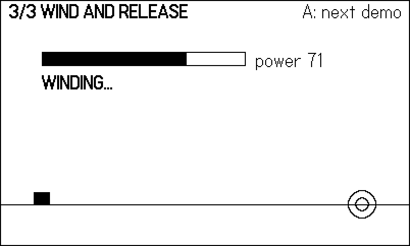
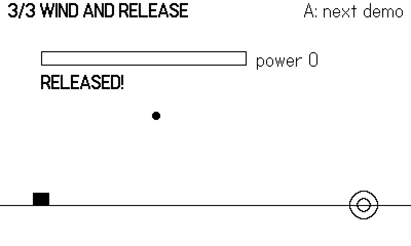
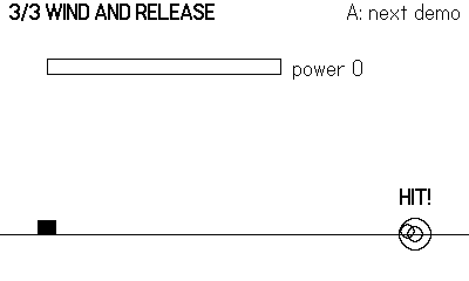

10 The Crank
No other console has one. The crank is a fold-out handle on the Playdate’s right edge that rotates freely, forever, in either direction — no stops, no detents, no spring. Mechanically it is a high-resolution rotary encoder; ergonomically it is a fishing reel, a pepper mill, a safe dial, a winch, and a steering wheel, depending entirely on the mapping you write. That mapping is a real design decision: the same hardware that feels wonderful reeling in a fish feels terrible steering a spaceship if you map it wrong, and this chapter ends with a catalog of mappings that sixty shipped games proved out so you can start from ones that work.
The API surface is small — three read functions, a dock sensor, two callbacks, and one stock UI widget — but the three read functions answer three genuinely different questions, and picking the wrong one is the classic crank bug. This chapter’s example puts all three side by side in one pdx: a detented selector built on getCrankTicks, a 1:1 aim turret built on getCrankPosition, and a wind-and-release lob built on getCrankChange, cycled with the A button. As always, a scripted wrist drives the figures, which forces us to solve a real problem — how do you fake a crank? — that turns out to teach the API more deeply than reading it ever would.
10.1 Three questions, three functions
Where is the crank? playdate.getCrankPosition() returns the absolute position in degrees, 0 to 359.9999, where zero is the crank pointing straight up and clockwise rotation (viewed from the device’s right edge) increases the angle. Absolute position is for mappings where the handle is a physical thing in the game: a turret barrel, a clock hand, a mortar’s elevation.
How much did it move? playdate.getCrankChange() returns the signed delta in degrees since the last call — positive clockwise, negative anti-clockwise. It actually returns two values:
local change, acceleratedChange = playdate.getCrankChange()acceleratedChange is the same delta multiplied by a speed- dependent factor, like mouse acceleration: slow cranking passes through nearly 1:1, fast cranking is amplified. Use it for scroll views and long lists where a player spinning hard means “get me to the end,” and plain change for anything physical, where acceleration would break the machine metaphor.
How many notches did it click past? playdate.getCrankTicks (ticksPerRevolution) quantizes rotation into discrete ticks — pass 12 and you get one tick per 30 degrees, returned as a signed count (usually 0 or ±1 per frame) as boundaries are crossed. Tick boundaries sit at fixed absolute angles, not at wherever-you-started, so twelve ticks land on the same twelve clock positions every revolution. Ticks are for menus, item wheels, and anything that should feel like a ratchet.
getCrankPosition and getCrankChange are core API, always present. getCrankTicks is not — it is defined in CoreLibs/crank, and without import "CoreLibs/crank" the call is an attempt to call a nil value that crashes at runtime, not compile time, on the first frame that reads it. Fightin’ Chitin was burned by exactly this in an early build; its fighter-select screen still carries the scar tissue, guarding the call so the screen survives even if the import goes missing:
-- chitin/source/select.lua:72
local ticks = playdate.getCrankTicks and playdate.getCrankTicks(12) or 0
if ticks ~= 0 then move = ticks > 0 and 1 or -1 endImport the CoreLib and you will not need the guard; the example’s main.lua imports it right at the top with a comment saying why.
One more sharp corner: each of these functions consumes its own delta. getCrankChange reports movement “since the last time this function (or the playdate.cranked() callback) was called,” and getCrankTicks likewise counts from its own last call. Call either from two places in the same frame and each call sees only part of the motion. The classic symptom is a scroll view that moves at half speed after you add a second feature that “also just peeks at the crank.” The cure is the Chapter 9 discipline: read the crank once per frame into the input snapshot, and let everyone consume the snapshot.
10.1.1 The push model: cranked()
Like the buttons, the crank also speaks the callback dialect. Define playdate.cranked(change, acceleratedChange) and the OS calls you with the same two values getCrankChange returns; a cranked entry in an input-handler table (Chapter 9) does the same, and stacks and masks like every other handler callback. This matters for exactly the situation input handlers exist for: a modal overlay that scrolls with the crank must own the crank while it is up, and a masking handler with a cranked function does that cleanly — remember that the callback consumes the same delta as getCrankChange, which is precisely what you want, since the game’s poll then correctly sees nothing while the overlay eats the rotation. For the core loop, poll; the reasons from Chapter 9 apply unchanged.
10.2 Docked, undocked, and the indicator
The crank folds flat into the console body, and the OS can tell. playdate.isCrankDocked() polls the state; the optional callbacks playdate.crankDocked() and playdate.crankUndocked() fire on the transitions. The docking action plays a stock sound effect, which playdate.setCrankSoundsDisabled(true) suppresses if your game has its own foley (it re-enables automatically when your game exits).
Dock state is design input. A docked crank means the player is holding the machine like a Game Boy; an undocked crank means one thumb has left the buttons. Games that make the crank optional poll isCrankDocked() and swap control schemes — Lob aims with the crank when it is out and falls back to d-pad rotation when it is stowed.
When the crank is required, tell the player with the system’s own widget. playdate.ui.crankIndicator (import CoreLibs/ui) draws the standard “use the crank” toast at the lower right: call playdate.ui.crankIndicator:draw() every frame you want it shown — typically if playdate.isCrankDocked() — and it animates a “Use the crank” message for about 0.7 seconds, then a rotating crank for about 1.4, looping. Stop calling :draw() and it is gone. The .clockwise boolean property flips the animation direction, and :resetAnimation() restarts the sequence; there is nothing to instantiate — the shared instance is the object. The example wires it exactly this way in its update loop, so on a real device the demo nags until the handle comes out.
10.3 The example: three mappings, one handle
Everything the crank does in this chapter flows through one snapshot function, extending the Chapter 9 pattern:
-- One snapshot per frame:
-- pos absolute degrees, 0 = crank straight up
-- change delta degrees since last frame (signed)
-- ticks detents crossed this frame (getCrankTicks)
-- aJust the panel-advance button
-- docked true when the crank is folded into the body
function Input.gather(frame, ticksPerRev)
local bot = Harness.input(frame)
local s = {}
if bot then
local change = bot.crank or 0
botPos = (botPos + change) % 360
s.pos, s.change = botPos, change
s.ticks = Input.botTicks(change, ticksPerRev)
s.aJust = (bot.a and not prevA) or false
prevA = bot.a or false
s.docked = false
else
s.pos = pd.getCrankPosition()
s.change = pd.getCrankChange()
-- getCrankTicks REQUIRES import "CoreLibs/crank"
s.ticks = pd.getCrankTicks(ticksPerRev)
s.aJust = pd.buttonJustPressed(pd.kButtonA)
s.docked = pd.isCrankDocked()
end
return s
endThe human path is three SDK calls plus the dock poll. The bot path is where scripting a crank gets interesting: the figure script supplies a per-frame delta (bot.crank, in degrees), and the snapshot integrates it into an absolute position — so pos, change, and ticks stay mutually consistent, exactly as they are for hardware. Ticks are derived with the SDK’s own fixed-boundary rule:
-- Mirror of the SDK's tick rule: boundaries sit at fixed absolute
-- angles, every 360/n degrees; a tick fires when one is crossed.
local acc = 0
function Input.botTicks(change, ticksPerRev)
acc = acc + change
local per = 360 / ticksPerRev
local ticks = 0
while acc >= per do acc = acc - per; ticks = ticks + 1 end
while acc <= -per do acc = acc + per; ticks = ticks - 1 end
return ticks
endTwelve lines to emulate the encoder, and in exchange the panels below run identically under a script or a hand. Why integrate deltas instead of letting the script set positions directly? Consistency: real hardware never teleports, and code you write against pos and change should never see them disagree. A script that says “8 degrees a frame for 50 frames” is also a physical description — you can feel your wrist doing it — which keeps scripted runs honest about what a player can actually perform. The panels count their interesting events (Harness.count("detents"), "tracers", "lobs", "hits") so a scripted run does not just produce figures, it asserts behavior: a refactor that breaks tick derivation zeroes the detent counter on the next run.
The A button cycles the three panels:
local panels = { Selector, Turret, Lob }
local cur = 1
function playdate.update()
local s = Input.gather(frame, 12) -- 12 detents per revolution
if s.aJust then
cur = cur % #panels + 1
panels[cur].reset()
Harness.count("panelSwaps")
end
panels[cur].update(s)
gfx.clear(gfx.kColorWhite)
gfx.drawText("*" .. TITLES[cur] .. "*", 8, 2)
gfx.drawTextAligned("A: next demo", 392, 2,
kTextAlignment.right)
panels[cur].draw(s)
if s.docked then -- nudge the player toward the handle
playdate.ui.crankIndicator:draw()
end
end10.3.1 Panel 1: the detented selector
function Selector.update(s)
if s.ticks ~= 0 then
local n = #ITEMS
Selector.i = (Selector.i - 1 + s.ticks) % n + 1
Selector.flash = 6 -- brief highlight: one click, one step
Harness.count("detents", math.abs(s.ticks))
end
if Selector.flash > 0 then Selector.flash = Selector.flash - 1 end
ends.ticks is almost always 0, occasionally ±1, so the selection walks one item per 30-degree click, wrapping with the usual (i - 1 + n) % n + 1 modular dance. The six-frame flash thickens the dial needle after each click — a tiny visual detent to stand in for the mechanical one the hardware doesn’t have. Figure 10.1 catches the flash mid-click, with the on-screen dial showing the twelve boundary notches the ticks snap to.

Detents are the right mapping whenever the underlying value is discrete. The player never has to aim — overshoot by 14 degrees and nothing happens; the ratchet only speaks at the boundaries.
10.3.2 Panel 2: one-to-one aim
function Turret.update(s)
-- crank straight up (0 deg) = barrel straight up
Turret.angle = math.rad(s.pos - 90)
Turret.timer = Turret.timer + 1
if Turret.timer % 10 == 0 then -- steady tracer fire
local c = math.cos(Turret.angle)
local si = math.sin(Turret.angle)
Turret.shots[#Turret.shots + 1] = {
x = TX + c * 30, y = TY + si * 30,
dx = c * 6, dy = si * 6,
}
Harness.count("tracers")
end
for i = #Turret.shots, 1, -1 do
local sh = Turret.shots[i]
sh.x, sh.y = sh.x + sh.dx, sh.y + sh.dy
if sh.x < -8 or sh.x > 408 or sh.y < -8 or sh.y > 248 then
table.remove(Turret.shots, i)
end
end
endOne line of mapping: angle = rad(pos - 90). The - 90 converts crank-zero (straight up, toward the sky) into screen coordinates, where an angle of zero points right; with it, crank-up means barrel-up, and the handle becomes the barrel. The turret fires a tracer every ten frames so the figure shows where it points (Figure 10.2).

This is the crank at its most transparent, and Lob — a voxel artillery duel — ships exactly this line, plus the dock-state fallback from the previous section:
-- voxel/games/lob/input.lua:26
local pd = playdate
s.aim = nil
if not pd.isCrankDocked() then
-- crank up = aim away from the viewer
s.aim = math.rad(pd.getCrankPosition() - 90)
endnil when docked, an angle when not: downstream code treats “the player is aiming” and “the player has stowed the crank” as different inputs, not different values, and the d-pad fallback fills in only in the first case.
10.3.3 Panel 3: wind and release
function Lob.update(s)
if s.change > 0.5 then -- winding forward
Lob.power = math.min(100, Lob.power + s.change * 0.25)
Lob.still = 0
elseif Lob.power > 0 and not Lob.shell then
Lob.still = Lob.still + 1
if Lob.still >= STILL then -- hands off: release!
local v = 2 + Lob.power * 0.05
Lob.shell = { x = 40, y = GROUND,
dx = v * 0.8, dy = -v }
Harness.count("lobs")
Lob.power = 0
end
end
local sh = Lob.shell
if sh then
sh.dy = sh.dy + 0.25 -- gravity
sh.x, sh.y = sh.x + sh.dx, sh.y + sh.dy
if sh.y >= GROUND then -- touchdown
local hit = math.abs(sh.x - TARGET) < 16
Lob.splash = { x = sh.x, t = 40, hit = hit }
if hit then Harness.count("hits") end
Lob.shell = nil
end
end
if Lob.splash then
Lob.splash.t = Lob.splash.t - 1
if Lob.splash.t <= 0 then Lob.splash = nil end
end
endThe third mapping treats cranking as effort. Forward motion pumps the power meter (change * 0.25, capped at 100); the moment the crank goes still for five frames, the stored power releases as a lobbed shell whose velocity scales with the meter. The player physically winds up a throw and lets go — no button involved. Figure 10.3 shows the meter filling under hard cranking; Figure 10.4 the shell in flight after the hands came off; and Figure 10.5 the payoff, a full-power shot splashing onto the target ring.



Because release is the verb. Wind-and-release lives or dies on the wind-up being the whole gesture; adding a button turns a throw back into a menu. Playtesting across Lob and Bulwark settled a refinement, though: players like aiming on the crank and confirming power with a held-A oscillating meter when the two must combine — one hand per concern. If your design needs aim and power on one crank, steal that split rather than overloading the handle with both.
10.4 Degrees are not game units
Every crank mapping ends with a multiplication, and that constant deserves more respect than it usually gets. A few rules from the tuning trenches:
Gear it deliberately. The wrist turns comfortably at roughly one revolution per second, in bursts. If one revolution of the crank should reel in one meter of fishing line, your constant is meters = change / 360 — and now “how fast can the player reel” is a physical fact you can design around rather than an accident of a magic number. State the gearing in real terms in a comment (-- 90 deg of crank = one ladder rung) and tuning sessions stop being guesswork.
Deltas need no DT. A per-frame change is already “degrees this frame” — physical motion, sampled. Multiplying it by DT double-applies time and makes crank speed depend on frame rate. Compare the two terms in Gyre’s mixer, quoted below: the crank delta passes straight through, while the d-pad term — a per-second rate — is the one multiplied by C.DT.
Clamp arcs for dials. A throttle or volume knob should not wrap from full to zero as the crank crosses its top. Either accumulate deltas into a clamped value (a “virtual dial” that simply stops accepting input at its ends), or if you map absolute position, pick an arc well away from 0/360 so normal use never crosses the seam. Herd’s release-rate dial is a clamped accumulator; the players who tested it never noticed — which is the point.
Respect direction. Clockwise-when-viewed-from-the-right is “forward”/“in”/“up” in most players’ intuition (reeling, winding, throttling up). If your mapping feels backward in testing, negate the constant rather than asking players to adapt — one changed sign beats a tutorial sentence.
10.5 A catalog of proven mappings
Sixty games in, these are the crank mappings that survived play, with a shipped reference for each. Steal freely.
| Mapping | Read | Feels like | Proven in |
|---|---|---|---|
| 1:1 rotation/aim | getCrankPosition |
the handle is the object | Asteroids-style ships, Rubble, Lob |
| Wind-and-release power | getCrankChange |
a throw, a catapult | Lob, Bulwark |
| Spring/boost charge | getCrankChange |
cocking a spring | Crumble, Marble |
| Detented selection | getCrankTicks |
a ratchet, a rotary phone | Bulwark piece rotation, Chitin select |
| Rate dial / throttle | getCrankPosition (as a knob) |
a volume knob | Herd’s release-rate dial |
| Crank-as-velocity | getCrankChange |
stirring the world | Gyre |
| Paddle / steering | getCrankChange or position |
Pong knob, a wheel | paddle and steering prototypes |
| Fuse / timer length | getCrankTicks |
setting an egg timer | fuse-length tuning |
The last untried-looking entry, crank-as-velocity, deserves its quote. Gyre is a Gyruss-style tube shooter in which the ship rides a ring around the screen edge, and its entire movement model is one line — the crank’s delta is the ship’s angular velocity:
-- phosphor/games/gyre/input.lua:79
local move = playdate.getCrankChange()
if playdate.buttonIsPressed(playdate.kButtonLeft) then
move = move + C.DPAD_DEG_PER_SEC * C.DT
endCrank fast, orbit fast; stop, stop. No tuning constant ever felt as direct as the raw delta — the crank IS the ship. (Note the d-pad additively mixed in as a fallback, in the same snapshot, so a docked-crank player is never stranded.)
Two rules of thumb fall out of the catalog. First, match the verb’s physics: continuous world quantities map to change, positional things map to position, discrete choices map to ticks — misassign these and the handle fights the player’s wrist. Second, respect fatigue: cranking is more muscle than a thumbstick, so mappings that demand sustained fast rotation (velocity, winding) need sessions measured in seconds, while position and detent mappings, which are nearly effortless, can run a whole game.
10.6 The scripted wrist
As in Chapter 9, every figure came from a script — this time a wrist rather than a thumb:
-- Figure script: one scripted wrist. A slow 3 deg/frame crawl
-- clicks through the selector, a 4 deg/frame sweep aims the turret
-- (A advances panels at 90 and 180), then a hard 8 deg/frame wind
-- charges the lob, which releases when the crank goes still at 235
-- and fires at ~240, landing on the target at ~296.
Shots = {
seed = 1,
last = 310,
shots = {
["crank-detent"] = 70, -- selector mid-click, needle bold
["crank-aim"] = 150, -- barrel at 150 deg, tracers out
["crank-wind"] = 220, -- meter charging, WINDING label
["crank-release"] = 260, -- shell mid-arc
["crank-hit"] = 302, -- splash ring on the target
},
script = function(f)
local crank = 0
if f <= 90 then
crank = 3
elseif f <= 180 then
crank = 4
elseif f >= 185 and f <= 235 then
crank = 8
end
return { crank = crank, a = (f == 90 or f == 180) }
end,
}Read it as choreography. A slow 3-degrees-per-frame crawl through the selector is 270 degrees over 90 frames — nine detent clicks, each of which must move the list exactly one row or the detents counter betrays the bug. The turret’s 4-degree sweep puts the barrel at a photogenic 150 degrees on the shot frame, with tracers from the preceding half-revolution still in flight. And the lob panel’s timeline is the mechanic itself, spelled out in frames: wind hard until 235, go still, release fires five quiet frames later, and the shell’s whole ballistic arc — including the touchdown on the target at ~296 — follows deterministically from the release velocity. The comment block at the top of the file records those expected beats, which is a habit worth copying: when a run’s figures come out wrong, the script’s own comments say what should have happened on which frame.
10.7 What you know now
getCrankPosition()= absolute degrees, 0 = straight up;getCrankChange()= signed delta plus an accelerated second return;getCrankTicks(n)= fixed-boundary detents — and it lives inCoreLibs/crank, crashing at runtime without the import.- Deltas are consumed per call: read the crank once per frame into the input snapshot.
isCrankDocked()plus thecrankDocked/crankUndockedcallbacks let you swap control schemes;playdate.ui.crankIndicator:draw()(CoreLibs/ui) is the stock “use the crank” nag.- A scripted crank is an integrated delta: feed deltas, derive position and ticks, and the same panel code serves script and hand.
- Match mapping to verb — position for aim, change for effort and velocity, ticks for choices — and budget the player’s wrist.
Next: the input you cannot see. The accelerometer, the System Menu, the keyboard, and the rest of the system UI — everything your game does when it is not strictly playing.